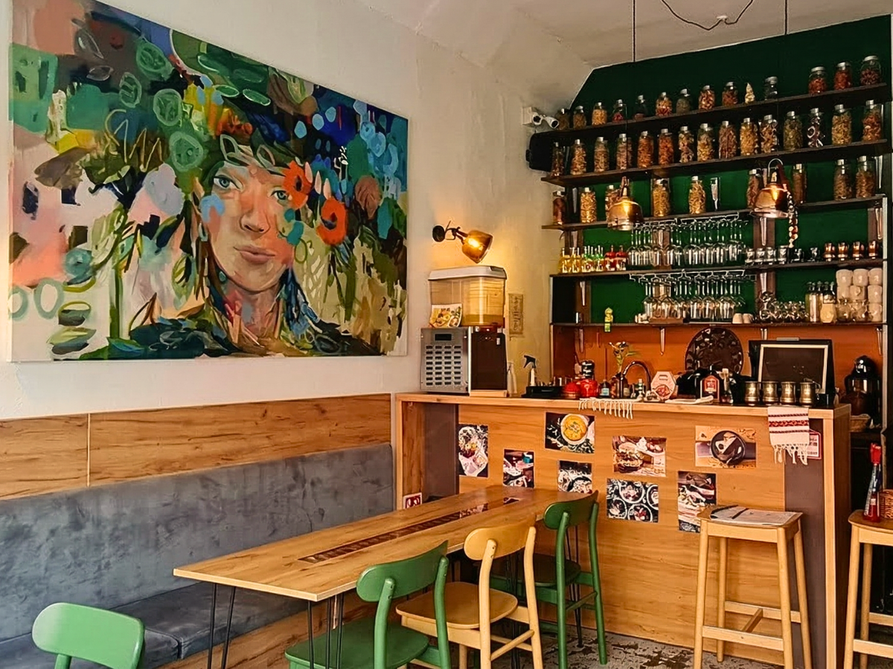
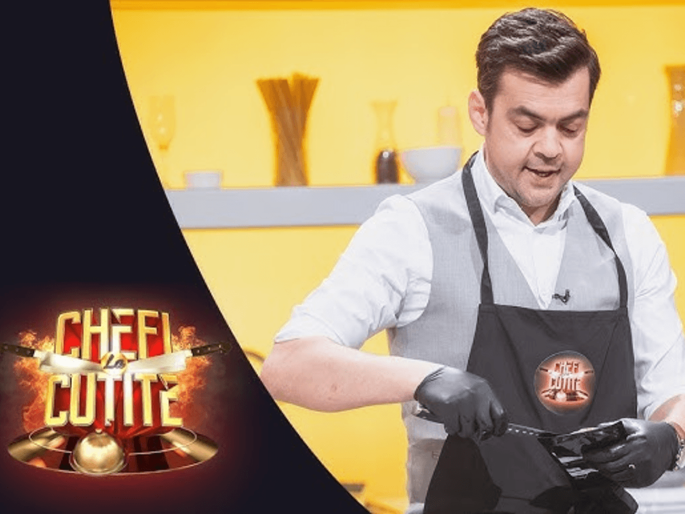
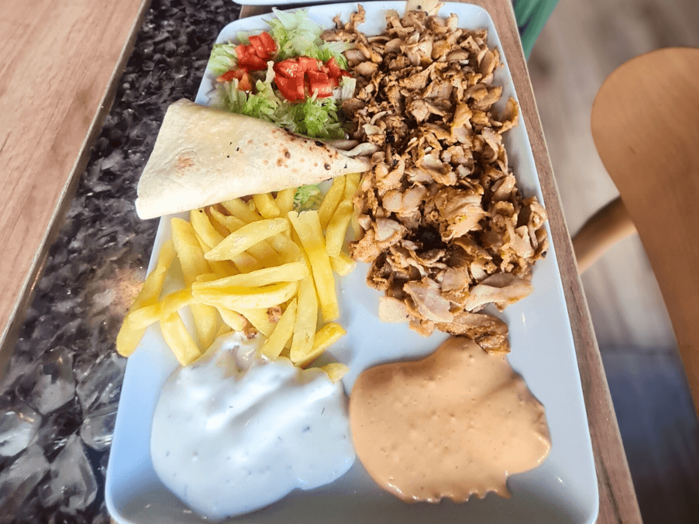
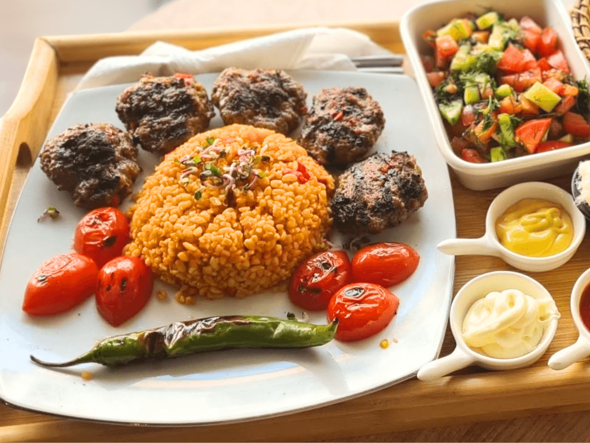
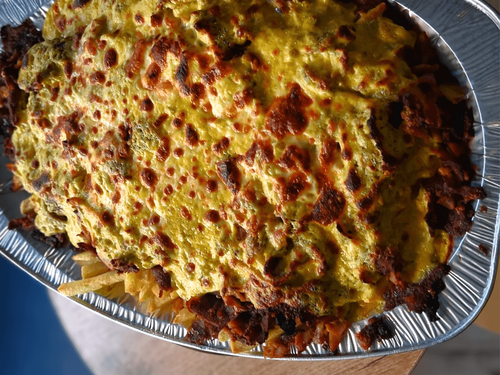
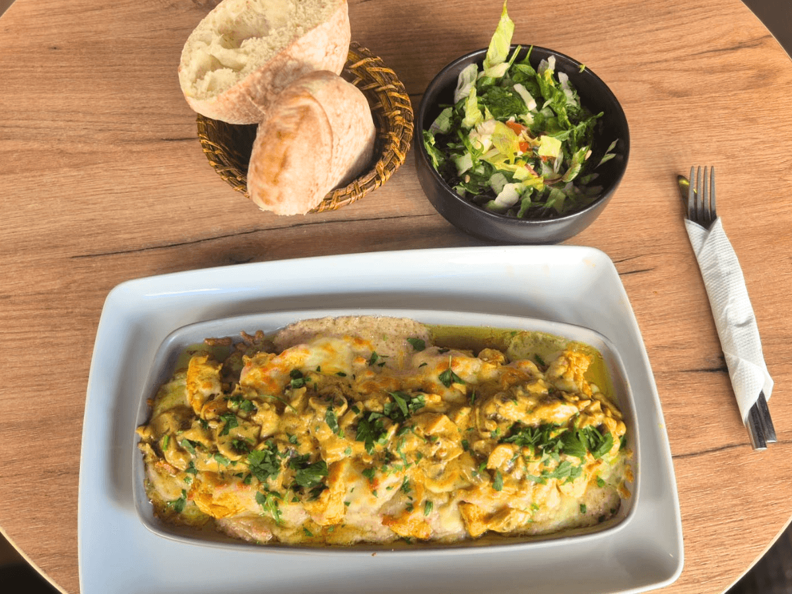
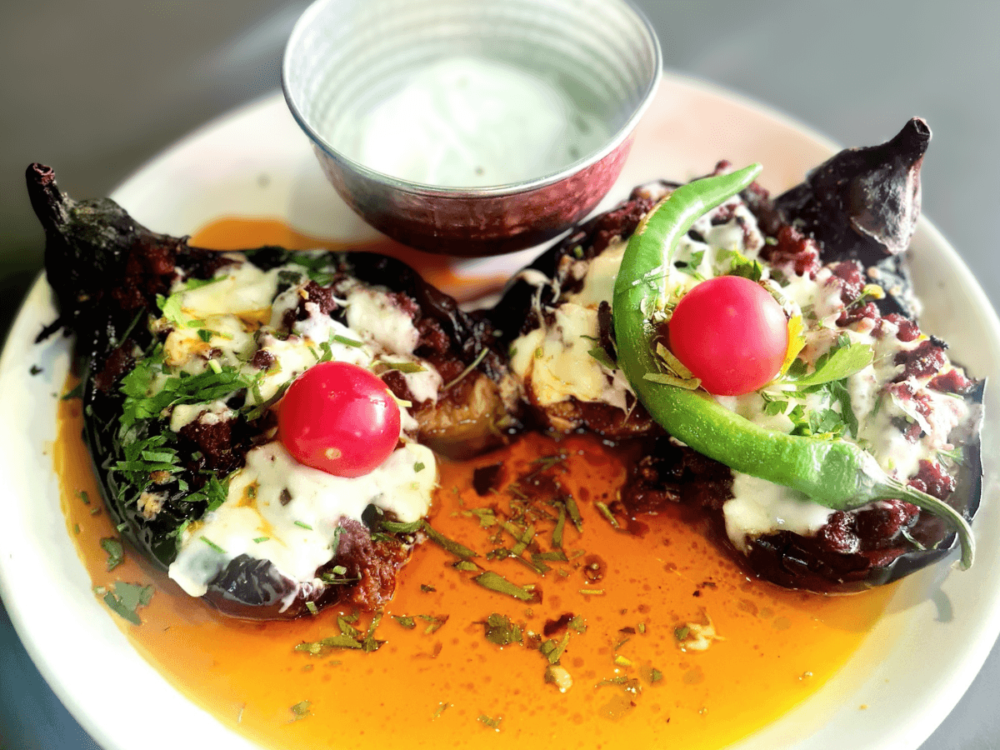
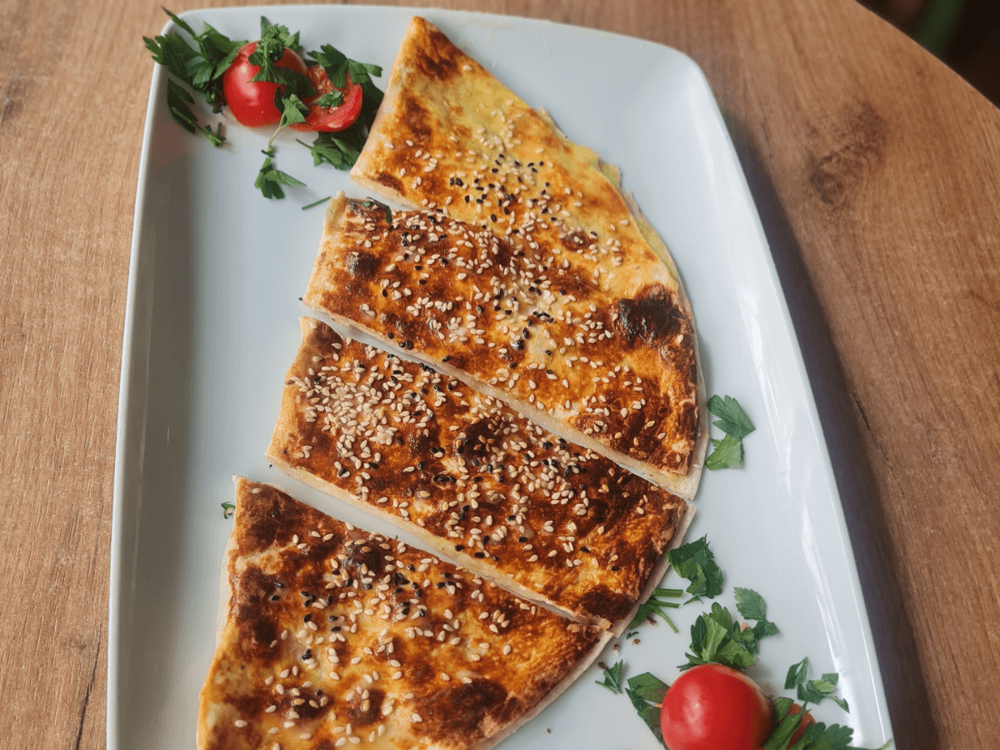

Experiență culinară tradițională în inima Maramureșului, pregătită cu pasiune de Chef Nuri Guney.
Află mai multe
Orient Turkish Bistro nu este doar un restaurant, ci un pod cultural între tradițiile bogate ale Turciei și ospitalitatea maramureșeană. Născut din dorința de a împărtăși aromele autentice, bistroul nostru aduce în Baia Mare rețete transmise din generație în generație.
Fiecare preparat este o invitație la o călătorie senzorială, unde ingredientele proaspete întâlnesc condimentele orientale într-o armonie perfectă.
Nuri Guney are o poveste de viață ieșită din comun. Fost inginer electronist și consultant pentru instituții internaționale precum Ambasada SUA și Comisia Europeană pe partea de drepturile omului, Nuri a fost nevoit să lase în urmă o carieră prosperă în Turcia pentru a-și găsi libertatea.
Refugiat politic în România, el a ales să se stabilească în Maramureș, locul unde s-a simțit acasă încă de la prima vizită. Deși a călătorit prin toată Europa, inima i-a rămas aici, printre români, considerându-se acum un adevărat maramureșean.
Pasiunea sa pentru gătit s-a transformat dintr-un hobby într-o profesie de succes, fiind cunoscut și pentru participarea sa la emisiunea "Chefi la Cuțite". La Orient Turkish Bistro, Nuri este sufletul afacerii, fiind simultan bucătar, ospătar și manager, întâmpinând fiecare client cu un zâmbet și, deseori, cu o baclava din partea casei.


Vită, pui sau amestec. O explozie de arome autentice servite la farfurie.

Carne de vită, Bulgur cu legume, Salată și Sos de usturoi.

Vită, pui sau amestec, sos cheddar... PLATOU Pentru 6 Persoane.

Rumeli Kebabi (Pui cu ciuperci cu sos beșamel și cașcaval, condiment oriental).

Vinete umplute, carne de vită tocată cu legume și sos roșu.

Plăcintă tradițională turcească, coaptă pe plită și umplută cu ingrediente savuroase.
Vă așteptăm în inima orașului Baia Mare pentru a descoperi aromele Orientului.